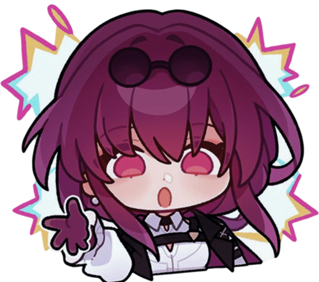
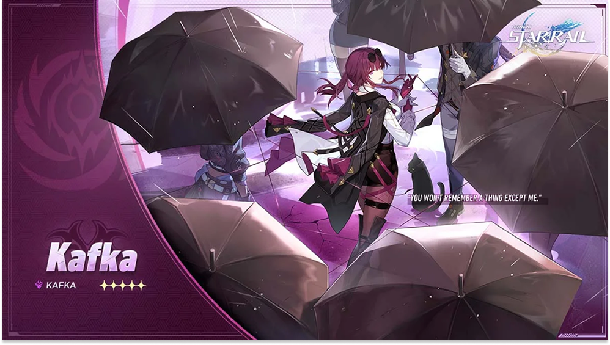
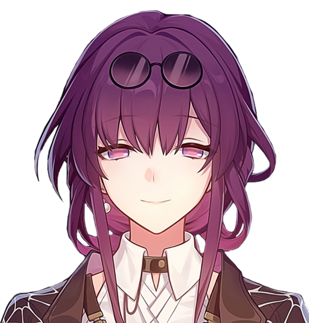
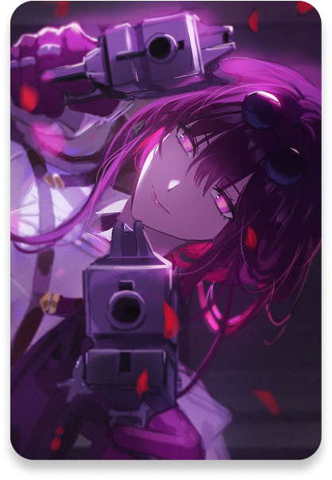
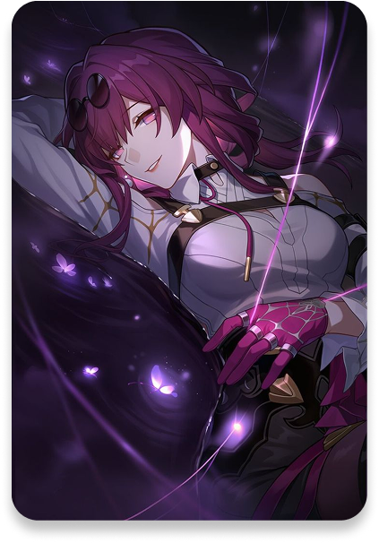
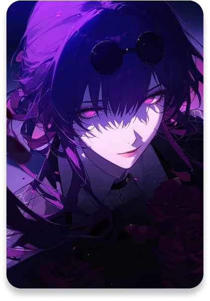

KAFKA
Stellaron Hunter
"Good Times Never Last"
"Good Times Never Last"
Kafka is a key member of the Stellaron Hunters, a mysterious organization that operates beyond the control of the universe’s known factions. Calm, elegant, and dangerously composed, she is known for her ability to manipulate both minds and outcomes with precision.
Unlike others, Kafka doesn’t rely on brute force — she orchestrates events from the shadows, guiding situations exactly where she wants them to be. Her presence is often accompanied by an unsettling sense of control, as if everything is already part of her plan.
Driven by a deeper purpose tied to destiny and the Stellaron, Kafka moves forward without hesitation — proving that sometimes, the most dangerous weapon is not power, but control.



Kafka is a core member of the Stellaron Hunters who operates strictly under the mysterious script written by Elio. She originates from Planet Pteruges-V, a unique world where the concept of fear does not exist, leaving its citizens completely devoid of terror or a true reverence for life.
This emotional emptiness initially led her to become a devil hunter until she met Elio, who recruited her by promising to grant her the emotional change she desired—the ability to finally feel true fear. In combat and espionage, Kafka utilizes a terrifying mind-control ability known as Spirit Whisper, which allows her to instantly hypnotize and command anyone who hears her voice.
Following Elio's script, Kafka has participated in numerous operations involving Stellarons and the Astral Express. This final act was crucial to ensure the Trailblazer could join the Astral Express crew with a blank slate, setting off a chain of events necessary to ultimately save the universe from destruction.



